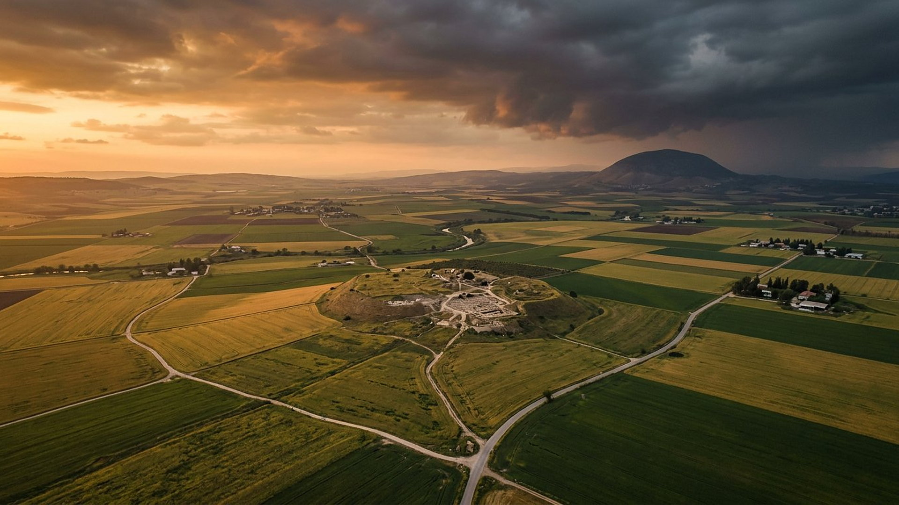
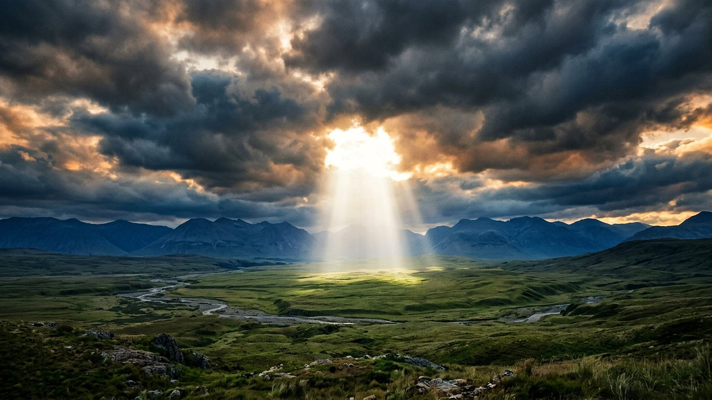
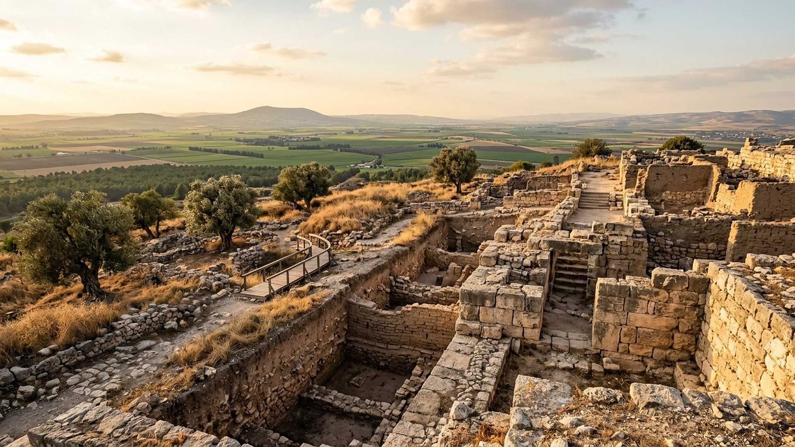

Salle 37 — Révélation 16 et 19 À VENIR
Harmaguédon : la guerre du grand jour de Dieu
« Ils les rassemblèrent dans le lieu appelé en hébreu Harmaguédon. » — Révélation 16:16 (d’après Segond 1910)
Reconstitution numérique — la plaine de Jizréel et la colline de Megiddo, sous un ciel qui s’assombrit.
Un nom de lieu pour un événement mondial
« Harmaguédon » translittère l’hébreu Har-Magedon, « montagne de Megiddo ». Megiddo n’a pas de montagne : c’est une colline de villes superposées — un Tel — qui garde le débouché de la plaine de Jizréel, là où la grande route antique entre l’Égypte et la Mésopotamie franchissait les monts. Qui tenait Megiddo tenait le passage des caravanes et des armées. Le nom seul évoque donc, pour un lecteur de la Bible, le lieu des batailles décisives : Déborah y chante la défaite de Sisera près des « eaux de Megiddo » (Juges 5:19), et le roi Josias y est mortellement blessé face au pharaon Néchao en 609 av. n. è. (2 Rois 23:29).
Dans la lecture retenue par ce musée, Harmaguédon n’est pas une guerre de plus entre nations : c’est « la guerre du grand jour de Dieu le Tout-Puissant » (Révélation 16:14), le rassemblement final des « rois de toute la terre habitée » contre le Royaume de Dieu, qui conclut la grande tribulation ouverte par la chute de Babylone la Grande (salle 36) et l’attaque de Gog (salle 31). Aucun État moderne n’y est identifié, aucune date n’est avancée, et les fidèles n’y combattent pas : c’est Dieu qui y met fin à la rébellion, non une croisade humaine.
Le récit en cinq temps
Avancez dans la vision, d’une station à l’autre.

Le banc des preuves : un Tel bien réel, une portée débattue
FAIT ARCHÉOLOGIQUE
Tel Megiddo, carrefour du monde antique (EV-46)
Megiddo, Hazor et Beer-Sheba sont inscrits au patrimoine mondial de l’UNESCO (liste n° 1108, « Tels bibliques ») : des millénaires de villes superposées, des systèmes d’adduction d’eau de l’âge du fer et le contrôle de routes commerciales majeures. L’archéologie confirme le décor du nom : peu de lieux du Levant ont vu passer autant d’armées, d’Égypte en Assyrie.
DONNÉE HISTORIQUE
Le champ de bataille des siècles
Vers 1457 av. n. è., Thoutmosis III y remporte contre une coalition cananéenne l’une des premières batailles documentées de l’histoire. En 609 av. n. è., le roi Josias y affronte le pharaon Néchao et y perd la vie (2 Rois 23:29). Le nom de Megiddo sonnait donc, aux oreilles anciennes, comme celui d’un verdict rendu sur une plaine — exactement la résonance qu’exploite la vision.
DÉBATTU
Lieu littéral ou symbole mondial ?
Certains lecteurs attendent une bataille littérale dans la plaine de Jizréel ; d’autres, avec ce musée, lisent le nom comme un symbole : le texte parle des « rois de toute la terre habitée » rassemblés, ce qu’une seule plaine ne contiendrait pas militairement. Le musée retient la portée mondiale et symbolique du nom, ancrée dans un lieu réel — et signale le débat au lieu de le trancher en silence.
Quatre clés pour ne pas se tromper de guerre
1. Pas un conflit entre États identifiables
La vision ne nomme ni pays, ni alliance, ni dirigeant moderne. Identifier un État actuel à un camp d’Harmaguédon serait ajouter au texte — et contredire la neutralité que cette salle observe strictement.
2. Les fidèles ne combattent pas
Dans le récit, les armées qui suivent le Roi sont célestes (Révélation 19:14). Aucun croyant n’est appelé à prendre les armes : la part humaine, dans cette salle, se résume à un mot — veiller (voir le troisième temps du récit).
3. Une conclusion, pas un commencement
Harmaguédon clôt la séquence ouverte par « paix et sécurité », la chute de Babylone la Grande (salle 36) et l’attaque de Gog (salle 31). Sa suite immédiate n’est pas une autre guerre, mais l’enchaînement de Satan pour mille ans (salle 32).
4. Aucune date, une vigilance
Au cœur même de l’annonce du rassemblement, le texte insère : « Voici, je viens comme un voleur. Heureux celui qui veille » (Révélation 16:15). Le but de la prophétie est une conduite éveillée, pas un compte à rebours.
Prescience n’est pas fatalité — la patience avant le jugement
Si l’issue est annoncée, le délai, lui, est présenté comme une patience : Jéhovah « est patient envers vous, ne voulant pas qu’aucun périsse, mais voulant que tous arrivent à la repentance » (2 Pierre 3:9, d’après Segond 1910). L’avertissement précède longuement l’événement ; nul n’est pris dans Harmaguédon par surprise de calendrier, mais chacun reste libre de veiller ou de dormir.

Salle 36 : la chute de Babylone la Grande · Salle 31 : Gog de Magog · Salle 32 : le règne de mille ans
Écouter la salle
Transcription de la narration
Bienvenue dans cette salle du musée. Vous allez découvrir une grande plaine, une colline de pierres anciennes et de vastes champs sous un ciel changeant. La visite se fait en cinq étapes courtes. Bonne visite à toutes et à tous. Devant vous, des portes de Pierre, des murets anciens et des champs à perte de vue racontent un carrefour de routes vieux de plusieurs milliers d’années. Prenez le temps d’observer chaque image, puis de lire les panneaux de la salle.